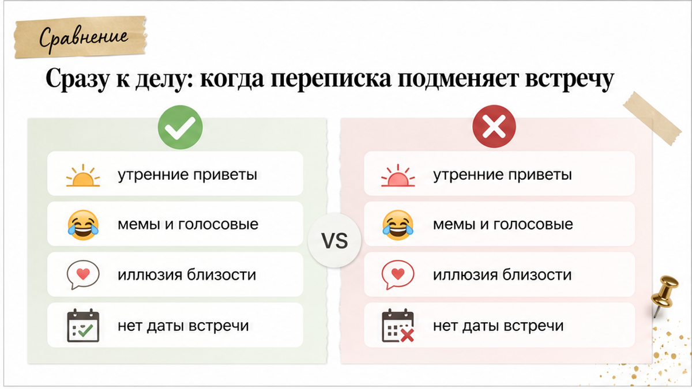
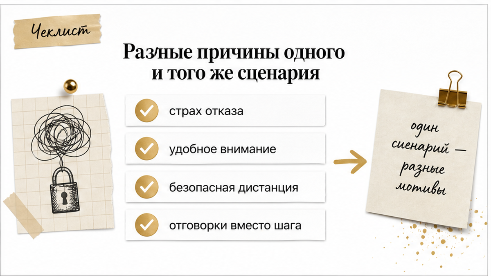
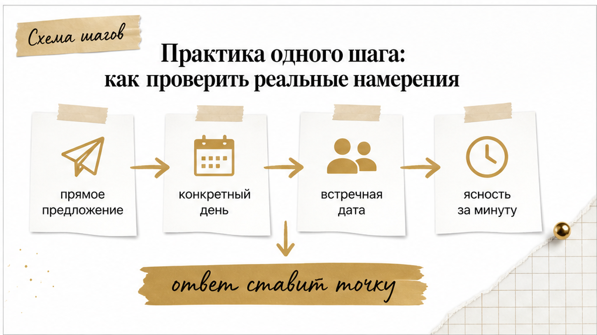

Экран телефона загорается каждый день: с утра приходит тёплое «Привет, как спалось?», днём летят забавные мемы и голосовые про рабочие авралы, а вечером вы можете часами обсуждать кино или делиться личными историями. Ощущение близости растёт с каждым сообщением, и кажется, что вы уже пара. Но проходят недели, разговоры становятся всё откровеннее, а прямого вопроса «когда увидимся?» так и не звучит. Человек постоянно присутствует в твоём смартфоне, но в реальную жизнь не делает ни шага.

Ежедневное тепло в мессенджере легко принять за готовность к отношениям. Но регулярные сообщения и желание увидеть человека вживую — это совершенно разные вещи. Для одного чат служит простым мостиком к свиданию, а для другого — законченным и удобным форматом, который даёт эмоции без риска и ответственности.
Когда переписка затягивается и начинает забирать душевные силы, карты помогают быстро подсветить скрытую расстановку сил:
Если неопределённость выматывает и нужно прояснить ситуацию прямо сейчас, открой 3 бесплатных расклада в боте (выбирай быстрый триплет или классический крест на отношения). А чтобы увидеть скрытые сценарии поведения и вектор развития вашей связи, используй расклад «Суть – Тень – Вектор» и подробный аудиоразбор связок карт в приложении ВКонтакте или в приложении Макс.
Регулярные сообщения создают стойкое ощущение движения вперёд. Когда мужчина помнит о важных для тебя деталях, делится личными переживаниями и желает спокойной ночи, кажется, что реальная встреча — лишь вопрос времени. Но в цифровом пространстве близость строится на безопасных условиях: в чате всегда есть время подумать над ответом, отредактировать фразу и показать себя с лучшей стороны.
Живая встреча — это всегда выход из раковины. Она сталкивает созданный образ с реальностью и несёт риск не оправдать ожиданий или столкнуться с отказом. Поэтому часть людей застревает на этапе сообщений: они получают женское тепло, внимание и эмоциональную подпитку, не беря на себя никаких обязательств реального общения.

По текстовым сообщениям невозможно точно угадать внутренние мотивы человека. За одинаковым поведением могут скрываться совершенно разные психологические механизмы:
Характерный признак затягивания ситуации — дежурные фразы «очень хочу увидеться», «надо как-нибудь встретиться» или «сейчас разгребу дела и выберемся», за которыми неделями не появляется конкретной даты в календаре.

Пытаться расшифровать силу симпатии по смайликам, скорости ответов и длине голосовых сообщений бесполезно. Единственный надёжный способ выйти из неопределённости — перевести разговор на уровень одного конкретного действия.
Для этого достаточно сделать один прямой шаг: предложить встретиться в определённый день и в конкретном месте (например: «Давай в четверг вечером выпьем кофе в центре»). Реакция на это предложение сразу расставляет всё по местам:
Главный вопрос здесь стоит задать себе: подходит ли тебе общение, которое существует исключительно на экране телефона, и сколько ещё времени ты готова отдавать контакту без реального продолжения.
Сделать один прямой шаг и предложить конкретный день и место. Если мужчина действительно хочет встречи, но занят, он сразу назовёт альтернативную дату. Если он снова уйдёт в размытые обещания без встречного предложения — ему просто удобен формат переписки.
Эмоциональная откровенность в сети не означает готовности к реальным отношениям. Мужчина может получать в чате поддержку, спасаться от скуки или подпитывать самооценку, но избегать свидания из-за страха разрушить идеальный образ или нежелания брать на себя обязательства.
Да, прямое предложение помогает сэкономить недели ожидания. Если в ответ последует согласие или встречная дата — интерес реален; если последуют новые отговорки без альтернативы — ситуация сразу прояснится.
Неопределённость всегда выматывает сильнее, чем любая правда. Пока ты пытаешься разгадать чужие намерения по случайным фразам и смайликам, твоя энергия и спокойствие уходят в пустоту.
Посмотри на ситуацию трезво и верни себе контроль: